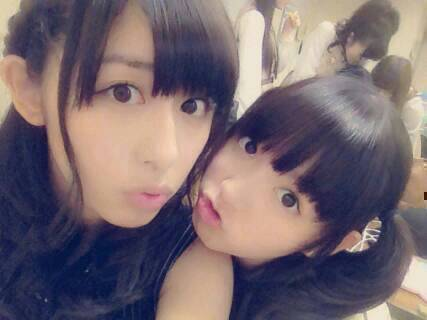
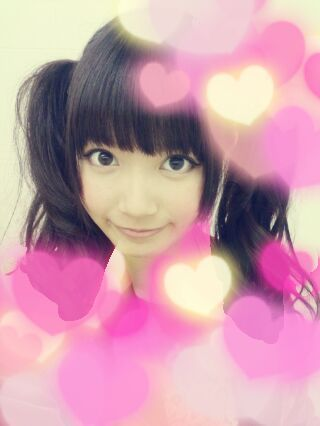

| 2013/10 26 Sat | ひめたん(*>ω<*)そ の360 |

むにゅーん。
金曜日はVAMPSフェスに
出演させていただきました(´ω`)
詳しいことは
日曜日が終わってから話そうかな。
でもとにかく楽しいステージでした！
来てくださったみなさんも
はじめましてのみなさんも
本当にありがとうございました♪
そして今日は
乃木坂派 お渡し会でした！
まいやん (白石麻衣ちゃん)ファンのみなさんも
るんるん (斎藤ちはるちゃん)ファンのみなさんも
優しい方いっぱーいで楽しかったです( ´ ▽ ` )
ひめきゅんさんもありがとー♪
握手会がない期間だからなのかなー
最近ずーと寂しかったんだよー
乃木坂派 もうチェックしたかなー？
コメント読んでると
感想書いてくださる方もいて
とーっても嬉しいですー♪
まだだよーって方はぜひ手にとって
ひめたんを見つけてみてくださいね(*^ω^*)

VAMPSフェスver.メイク(〃ω〃)
濃ゆめのメイクだよー♪
衣装はまだ内緒。
この前は撮影の合間に
あしゅりん (齋藤飛鳥ちゃん)
川後P (川後陽菜ちゃん)と
プリクラ撮ってきましたー♪
私たちって若いヽ(^0^)ノ
来週からはスケジュールも
とりあえず落ち着きそうな予感......。
前回のブログ
質問答えてくれてありがとー！
まだ前回の記事全部読めてないんだけど
ざーっとみたところ
あおむけ派が多かったかなー？
横向き派！とかゆー方もいらっしゃった！
最近はぐっすり眠れるようになりました(´ω`)
お風呂で寝ちゃうんですー

 左利きってどんなイメージ？
左利きってどんなイメージ？
左利きは天才って聞いたことある(｀・ω・´)
ひめたんのイメージする
介護福祉士ってどんなん？
とってもかっこいい！
さわやかなイメージ。さららーんって。
あれー伝わるかな？みんな共感してくれるはず......
ひめたんが目標としてるアイドルって
誰かいるー？
アイドルさんではないけど
最近 田村ゆかりさんのライブDVDを観て
かわいいなーキラキラしてるなーステキだなーって
うっとりしちゃいました(＊´ω`＊)
乃木坂の活動以外で
この秋にやってみたいことはありますか？
みさみさとカラオケ行って
若月と食べ放題行って
あすかりんとカフェ行って
広島帰る予定です(｀・ω・´)全部はムリかなー
あとは地元いる時からずっと仲良しの
ほんとのお姉ちゃんみたいな子と会いますっ
ひめたんのえへへーが好きなんで
これからもじゃんじゃん
えへへーって言ってくれますかー？
無意識でゆってるから
多分これからも直らないと思うよー
よかったねー♪♪
私、可愛い服似合わないんですよ...
でも、思い切って
挑戦してみてもいいと思いますか？
しよしよーどんどんしよーっ☆
似合わないとかゆっちゃだめだよ(｀・ω・´)
挑戦女子。応援します！
そんじゃ明日もVAMPSフェス頑張ってきまーす
乃木どこもみてねー
はっぴーはろうぃーん♪

(＊´・ω・＊)
コメント(344)
2013/10/26 22:30